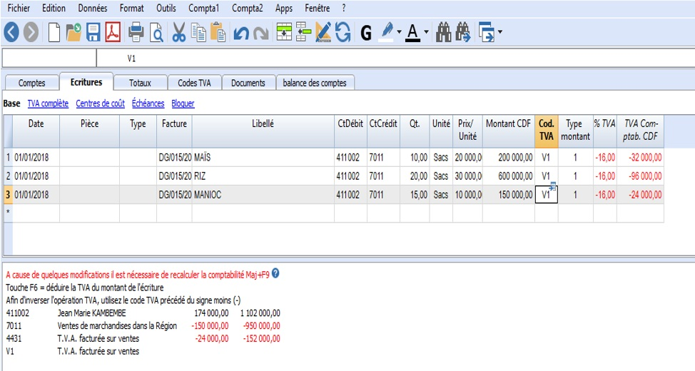
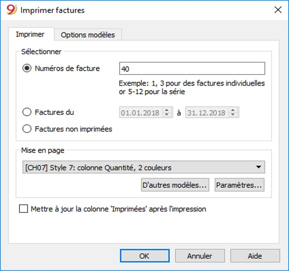
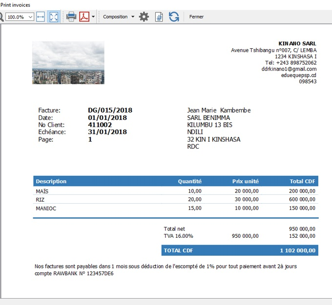

Activité 4
0001-01-01 00:00:00 +0000 UTCActivité 4 : Introduction à la facturation dans Banana Comptabilité
Contenu:
A. Fiche Pédagogique
1. Objectifs spécifiques :
Au terme de cette activité, le participant sera capable de :
-
Créer la facture avec ou sans TVA à l’aide du logiciel banana ;
-
Imprimer la facture suivant un modèle choisi.
2. Supports :
-
OHADA, Acte uniforme relatif au droit comptable et à l’information financière et système comptable OHADA, Yaoundé le 15 février 2017 ;
-
Guide d’application OHADA ;
-
EPSP, DIPROMAD, Curriculum des Humanités Techniques Commerciales, Commerciale et Gestion, Kinshasa 2014 ;
-
SERNAFOR Technique, module de formation sur le système comptable OHADA niveau 4, 2018 ;
3. Méthodes et techniques :
Exposé, discussion dirigée, brainstorming et travail de groupe.
4. Durée :
120 minutes
5. Déroulement de l’activité :
| N° | Tâches | Méthodes et Techniques | Durée |
|---|---|---|---|
| 1 | Présenter l’activité et ses objectifs | Exposé | 5 min. |
| 2 | Expliquer la procédure pour créer et imprimer la facture à l’aide du logiciel banana. | Brainstorming | 30 min. |
| 3 | Constituer des sous-groupes et demander aux participants de créer la facture suivant la procédure du logiciel banana comptabilité. | Travail en groupe | 55 min. |
| 4 | En plénière : le rapporteur de chaque sous-groupe présente la production de son équipe suivie de mise en commun avec les membres des autre sous-groupes et du facilitateur. | Discussion dirigée | 20 min. |
| 5 | Questions de synthèse
|
B. Fiche Technique
Dans le logiciel Banana comptabilité, les factures à envoyer aux clients sont créées à partir de l’écriture comptable d’émission de la facture.
Il s’agit là d’une approche différente de tous les autres programmes de comptabilité, où, en règle générale, on crée d’abord les factures et ensuite on insère les écritures comptables.
1. Créer une nouvelle facture
Pour créer une nouvelle facture dans le logiciel banana 9 comptabilité, on procède de la manière suivante :
-
Indiquez dans le plan comptable (tableau Comptes) un compte pour le client, l’adresse et d’autres données du client. Vous pouvez également y définir, dans quelle langue les factures individuelles doivent être imprimées ;
-
Dans le tableau Ecritures insérez les lignes des écritures qui deviendront ensuite les lignes sur la facture ;
-
Indiquez la date de l’écriture et le numéro de la facture. Ces valeurs devront être répétées sur les autres lignes appartenant à la même facture ;
-
Indiquez dans le compte débit le compte du client ;
-
Indiquez le compte de contrepartie (compte Vente, Consultation ou autre) et le montant ;
-
Vous pouvez aussi utiliser un code TVA pour indiquer le pourcentage de la TVA applicable à l’écriture ;
Après création de la facture, la commande Imprimer factures (menu Compta2 -> Clients) affichera l’impression de la facture en mode aperçu rapide, reprenant les données des clients du tableau Comptes et les lignes de la facture du tableau Écritures.
Les écritures des factures sont insérées directement dans le fichier de la comptabilité de la société. Cette approche est indiquée pour ceux qui écrivent les factures en comptabilité au moment de l’émission de la facture.
-
Les sociétés immobilières qui écrivent au début de l’année les loyers pour toute l’année
-
C’est une approche directe entre comptes des écritures et contenus des factures en insérant les écritures et en imprimant directement les factures vous évitez des erreurs de retranscription. Bien sûr, la condition pour émettre ces factures est de savoir gérer une comptabilité.
2. Adapter le fichier comptable existant pour insérer et imprimer les factures
-
Dans Banana comptabilité 9 créer une comptabilité ou ouvrir une comptabilité déjà existante. Si vous créez une nouvelle comptabilité, avec la commande Fichier - Nouveau, vous trouverez des modèles avec la gestion des clients déjà configurés.
-
Dans le menu Fichier-Propriétés fichier (données de base) configurez l’adresse de votre entreprise, qui sera reprise dans l’en-tête de la facture.
-
Dans le tableau Comptes, configurer le registre Clients et définir les configurations Clients du menu Compta2 -> Clients -> Paramètres. Toujours dans le tableau Comptes, sélectionner la vue Adresses et insérer les adresses des clients. Si la vue Adresses n’est pas disponible, vous pouvez l’ajouter avec le menu Outils -> Ajouter de nouvelles fonctions.
-
Dans le tableau Écritures insérez la ligne (ou les lignes) de la facture, utilisant un compte qui fait partie du registre clients et indiquant le numéro de la facture dans la colonne Facture ; dans le cas où elle n'est pas visible, utiliser le menu Données -> Organiser colonnes.
-
Des colonnes supplémentaires sont aussi disponibles pour pouvoir ajouter encore plus de détails (Quantité, Prix, Unité), qui peuvent être activées avec la commande Outils -> Ajouter des nouvelles fonctions -> Ajouter la colonne Quantité dans le tableau Écritures. Pour afficher la colonne Type, utiliser le menu Données -> Organiser colonnes.
3. Fichier séparé uniquement pour les factures
On crée un nouveau fichier, complètement séparé de celui de la comptabilité, dans lequel, le plan comptable contiendra la gestion des clients et des seuls comptes nécessaires à la facturation. Pour ce faire :
- Téléchargez le fichier d’exemple, ouvrez-le et adaptez-le selon vos besoins. Si vous le désirez, vous pouvez aussi commencer avec un des nombreux modèles existants et l’adapter comme indiqué ci-dessus, pour vos factures.
Cette approche est indiquée pour :
-
Ceux qui écrivent les factures sur l’encaissement. Dans le fichier de la comptabilité on enregistre uniquement le montant encaissé ;
-
Ceux qui désirent une gestion des factures complètement séparée. Par exemple l’envoi des quote-part aux membres d’une association.
Exemple insertion Facture

4. Les colonnes du tableau des écritures spécifiques pour les factures
-
Date : La facture reprend la date indiquée dans cette colonne. Toutes les lignes qui appartiennent au document doivent reprendre la même date.
-
Facture : Pour la gestion des factures, il faut obligatoirement indiquer le numéro de la facture et un compte qui fait partie du registre des clients.
Colonnes facultatives
-
Type: Dans la colonne Type on peut définir des lignes de détail, comme par exemple des lignes de totalisation ou un terme de paiement, spécifiques pour une facture.
-
Quantité: La colonne où on indique la quantité des articles ou du service vendu. Pour ajouter la colonne quantité, utiliser la commande Outils -> Ajouter de nouvelles fonctions -> Ajouter la colonne Quantité dans le tableau Écritures.
-
Unité: On y insère la quantité (ex. pc pour "pièce", "kg").
-
Prix/Unité: On y insère le prix unitaire se référant à la marchandise ou au service. Dans ce cas, le programme calcule automatiquement le montant global selon les quantités insérées dans la colonne Quantité.
5. Imprimer les factures
Pour imprimer les factures, après avoir inséré l’écriture de la facture dans le tableau Écritures :
- cliquer sur le menu Compta2, commande Clients - Imprimer factures

En cliquant sur Ok on obtient l’affichage de l’aperçu rapide de la facture.
- Avec la commande Afficher plus de détails, on peut choisir entre un des Modèles disponibles
6. Affichage de la facture
